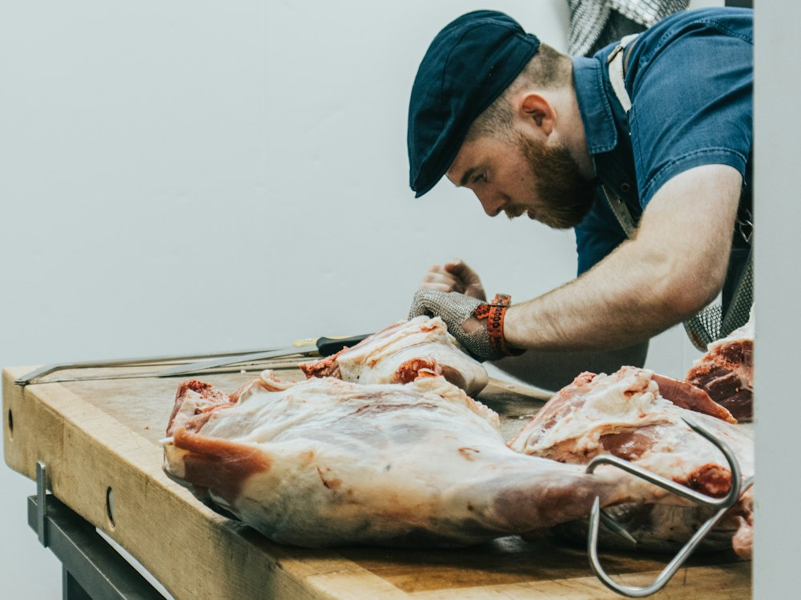

De la bonne viande
Bien choisie, vendue au prix juste.

Depuis plus de 20 ans
Trois frères, une boucherie, rue du Commerce à Ciney
L'histoire
Tout a commencé à Erpent, dans la boucherie de nos parents. Entre le comptoir et l'atelier, ils nous ont appris le métier : la boucherie, la charcuterie, le traiteur. Et aussi la sculpture sur légumes et le vin.
Plus de 20 ans plus tard, on est tous les trois à Ciney, rue du Commerce. Certains connaissent encore la maison sous son ancien nom : « Chez Olivier et Sébastien ».
Le comptoir change avec les saisons. On y met ce qu'on aime préparer.
Qualité Accueil Fraîcheur
« Laissez-nous vous conseiller et manger deviendra un vrai plaisir ! »

L'équipe
Bien choisie, vendue au prix juste.
On remplit vos contenants. Moins d'emballage.
Pâtés, boudins, lard : nos recettes, faites ici.

Qualité Accueil Fraîcheur
En photos